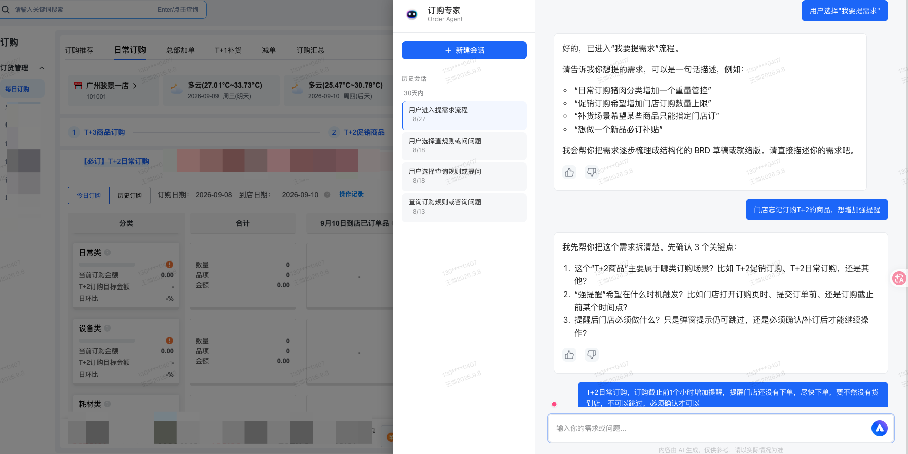
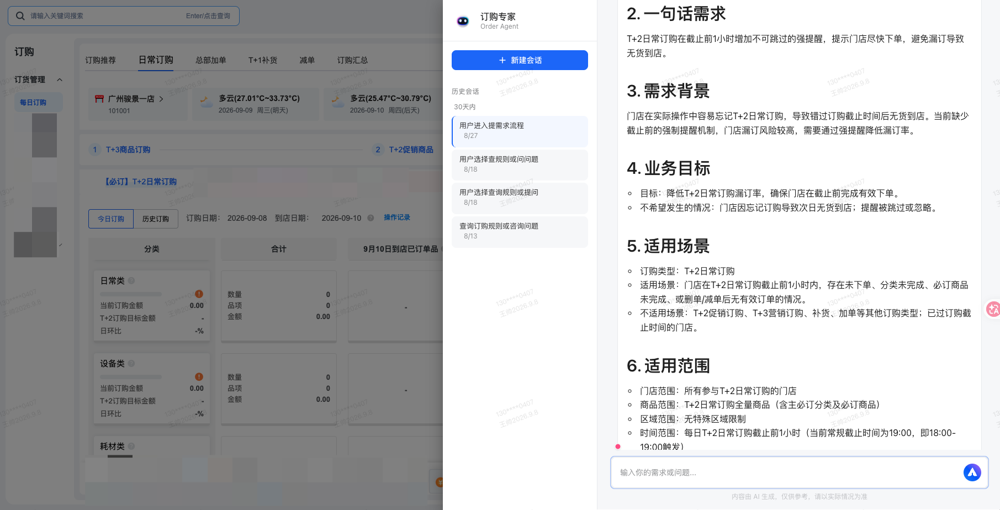
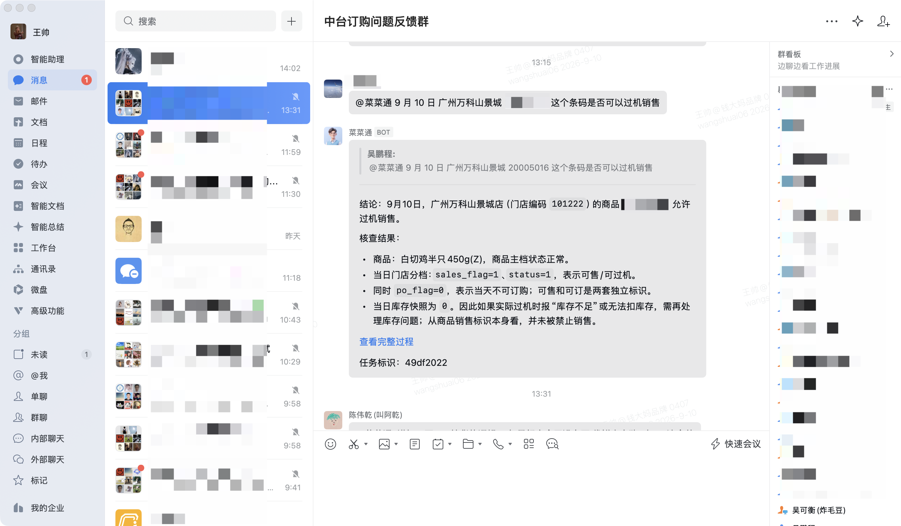
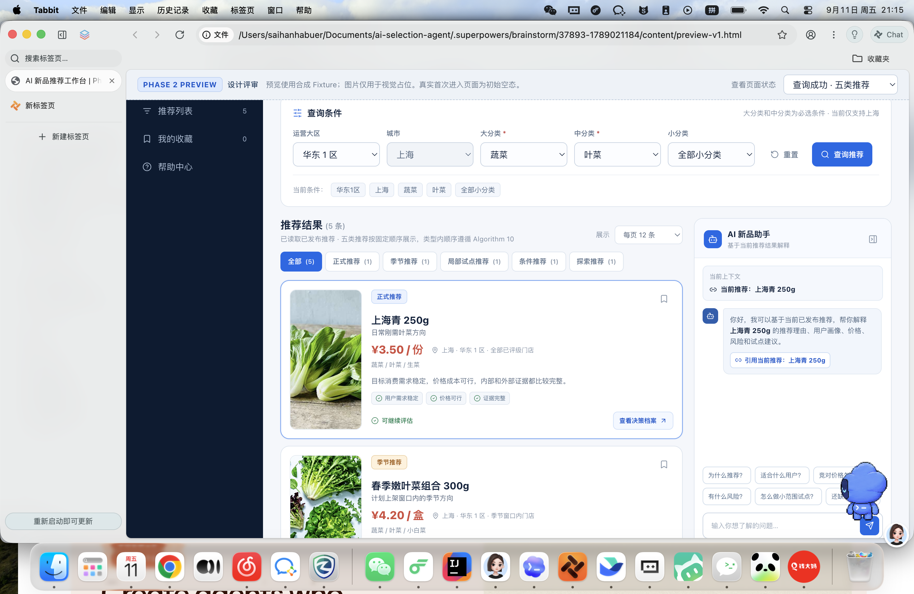
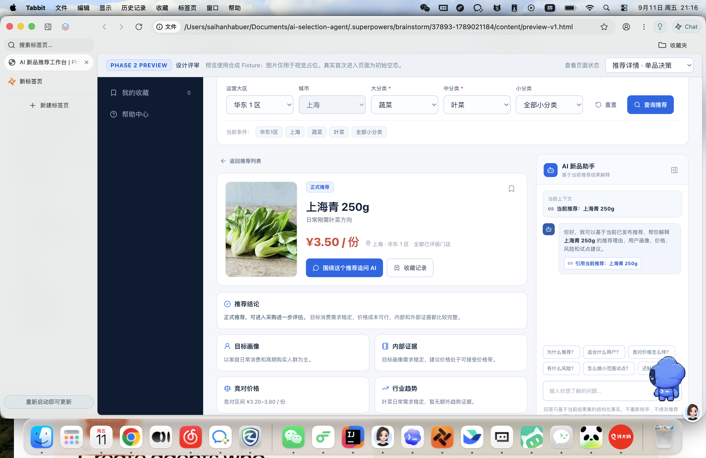

我是一名长期在真实零售业务里做产品的产品经理。过去几年，我一直在钱大妈社区生鲜的门店业务中工作，负责订购、补货、减单、库存和履约等产品。社区生鲜的业务节奏快，商品供应周期、采购计划、供应链配送、门店经营和损耗控制彼此牵连。很多时候，问题并不只是页面难不难用，而是不同角色能不能按照同一套规则，把事情做对。
我喜欢这类复杂的业务，因为产品效果离现场很近。在 3000+ 门店订购体系重构中，我从供应链和采购的实际能力出发，固定商品供应周期，按 T+3、T+2、T+1 重新组织订购入口和操作顺序，并推动研发上线、培训和业务使用。让我最有成就感的，往往不是功能上线，而是店长的直接反馈：流程是否更容易理解，今天该订什么、哪天到店、已经订了多少，能不能更快看清楚。
做得越久，我越关注业务协作中的重复确认。门店要问规则，客服要找产品，产品还要核对研发实现，采购和供应链也需要反复确认商品周期。每个人都在完成自己的工作，但信息和经验分散在不同的人手里，事情就容易卡住。订购专家 Agent 和 AI 新品推荐，都是我对这个问题的继续探索：让规则进入真实咨询，让采购获得更完整的判断依据，也让经验能够被组织持续使用。
我不希望为了使用 AI，就把所有流程都包装成 Agent。我的判断是，先看清楚一项工作为什么困难，再决定哪些由流程推进，哪些由规则判断，哪些适合让 AI 理解和辅助，哪些仍然需要人承担业务责任。我希望做的，是让 AI 真正进入业务日常，减少重复执行和反复确认，让门店更容易把事情做对，让采购和运营做判断时更有依据。
产品基础 → B端产品 → 复杂零售业务 → AI 业务产品化
广州市钱大妈农产品有限公司 ｜ 广州
长期负责社区生鲜门店中台，覆盖订购、补货、减单、库存、门店 POS、订购策略和 AI 业务产品化。
广州车行易科技股份有限公司 ｜ 广州
负责车后服务小程序基础能力和车联网服务项目，积累 B 端服务、账户体系和跨部门交付经验。
广州棒谷科技股份有限公司 ｜ 广州
负责客服系统、帮助中心、Q&A、智能客服和用户反馈流程，建立服务产品和流程产品经验。
钱大妈以社区生鲜和日清模式为核心。不同商品受供应地、运输距离、备货和配送能力影响，门店需要按照不同周期完成订购。原有入口分散，店长需要自己理解不同订购方式、记忆到店日期，并确认已经订了什么、订了多少。
原有入口分散，店长需要自己理解不同订购方式、记忆到店日期，并确认已经订了什么、订了多少。重构后，门店按照订购周期一步一步完成任务，并通过订单聚合页面看到某个到店日期会有哪些商品、已经订了多少。
订购规则、系统行为和线上问题排查方式分散在业务资料、研发文档、原型、截图、代码和历史确认中。业务提出需求时常常只有一句话，客服遇到问题也需要反复找产品确认。
新需求上线后的知识更新流程：
订购专家 Agent 不是一个文档查询工具，而是把订购规则、系统实际行为和问题排查方法接入企业微信：业务可以用它把模糊需求说清楚，客服可以用它查询规则、判断线上问题，并生成可继续处理的问题记录。
Agent 引导业务补充订购场景、提醒时机和触发方式等关键边界，逐步梳理需求，最终输出结构化 BRD 草稿。


业务在群里提问"某条码是否可以过机销售"，Agent 基于代码证据和 Wiki 给出结论、核查结果与任务标识，不编造规则。

钱大妈目前没有成熟的数据化新品推荐工具。采购主要依靠经验、供应商信息和市场观察判断是否开品，缺少把区域机会、目标客群、内部销售证据、外部竞品、价格和风险放在一起比较的工作方式。
采购进入工作台后，可以按城市、区域和品类查看系统已经生成的新品机会。每条推荐不是一个孤立的商品名称，而是一份"新品机会判断档案"，包括：
分工很明确：算法负责计算和整理结构化证据；工作台负责把结果组织成采购可以使用的判断材料；AI负责理解采购问题、调用当前结果并用业务语言解释；采购负责结合供应商、品质、试吃和经营经验做最终判断。
AI 不能直接扫描明细数据实时重算，也不能修改推荐排序、风险门禁或替采购拍板。重点不是在页面上增加一个聊天框，而是让 AI 帮采购更快理解一套已经整理好的机会证据。
项目目前仍处于正式开发前的设计阶段，不能表述为已经全面上线，也不能提前宣称销售、毛利或新品成功率已经提升。
采购进入工作台后，按城市、区域和品类查看系统生成的新品机会，每条推荐附带适用范围、经营依据、竞品和价格信息。

打开一条推荐，阅读新品机会判断档案，追问"为什么推荐""适合哪些门店""应该直接开发还是先试点"，查看风险限制和下一步建议。

最近在重新梳理商品中台的时候，有一个比较明显的感受：
这次重构可能不是把原来的商品建档流程推倒重来，而是流程没有发生根本变化，但执行流程的人变了。
以前商品建档，本质上是采购填表，然后经过商品、食安、财务等不同角色的审核，最后由系统完成建码和同步。
大家其实都在做同一件事情：判断这个商品到底是什么、应该怎么建、哪些信息是对的、哪些资料是完整的。
只是过去这些事情大部分依赖人来完成。
所以一开始很容易想到一个方向：
能不能让 Agent 把整个商品建档流程接过去？
但这两天越梳理，反而越觉得，商品建档可能根本不是一个 Agent 问题。
因为这个流程里，有很多事情其实非常确定。
比如某个品类必须填写哪些字段，哪些单位之间必须满足什么关系，什么情况下属于重复商品，哪些资料过期了不能通过，这些东西本质上都是规则。
这些事情不需要一个 Agent 自己思考下一步该干什么。
Workflow 就可以把流程往前推，规则负责判断，系统负责执行。
真正需要 AI 的地方，反而是那些过去比较依赖人的"理解"。
比如采购说：
"山东红富士苹果，一级，80果，门店散称。"
系统需要理解他说的是什么商品，从里面提取品种、等级、规格、销售形态，再去商品库里找有没有类似的商品，判断应该归到什么分类、SPU，推荐什么销售单位。
检测报告、标签、资质也是一样。
以前是人打开文件，一个个看、一个个比对。
现在可以让 AI 先理解这些东西，把结果整理出来。
所以现在我越来越倾向于把商品建档理解成：
Workflow + Rule + AI + Human
而不是：
Agent → 把整个流程做完。
真正需要变化的可能是：
把人的判断从大量低价值的执行工作里释放出来，只留下那些系统真的无法替代、同时又需要承担业务责任的判断。
所以这次商品中台重构，我现在更感兴趣的已经不是：
"我们应该做一个什么 Agent？"
而是：
"商品建档这个流程里，到底哪些事情应该由谁来做？"
这个问题其实比 Agent 更重要。
采购应该做什么？
系统应该做什么？
规则应该做什么？
AI 应该做什么？
人在什么情况下必须介入？
如果 AI 判断错了，谁负责？
如果规则覆盖不了，又应该怎么处理？
这些问题想清楚之后，Agent 反而只是一个很后面的选择。
可能某些场景确实需要 Agent。
但更多场景可能 Workflow + AI 就已经足够了。
我现在反而觉得，不要因为进入了 AI 时代，就把所有业务流程都重新包装成 Agent。
真正值得重构的，是过去那些大量依赖人的执行环节。
至于最后用 Workflow、AI、Copilot 还是 Agent，只是实现方式。
所以这次商品建档，我想先把这件事情研究清楚：
原来的流程为什么需要这些人？
哪些是因为真的需要人的判断，哪些只是因为过去系统做不到？
如果把这个问题回答清楚，也许我们才能真正知道：
未来人的位置应该在哪里。
最近在做 AI 选品，已经走到前端页面开发和 Agent 设计了。
但做到这个阶段，回头看了一下，突然发现一个问题：
我们现在做的东西，好像还不能真正叫"AI 选品"。
现在的核心链路其实还是算法在做判断。
算法根据商品、门店、历史销售等数据，算出一批推荐结果，再把这些结果呈现给选品的人。AI 更多是在这个过程中做辅助，比如理解需求、解释算法结果、帮助筛选和比较，最后还是人来做判断。
所以如果把 AI 拿掉，现在这套选品逻辑其实还是可以跑起来的。
这让我开始重新想，到底什么才叫 AI 选品。
如果只是：
算法算结果 → AI 解释结果 → 人做选择
我觉得更准确的说法应该是算法选品 + AI 辅助决策。
这和真正的 AI 选品其实是两回事。
真正的 AI 选品，可能应该是：
人提出一个业务目标 → AI 理解目标 → 自己去找数据 → 分析不同商品 → 形成候选方案 → 比较方案和风险 → 最后让人确认。
这里面最关键的变化，不是页面上多了一个 AI 对话框，也不是多了一个 Agent。
而是：
原来是算法告诉人"应该选什么"，未来可能变成 AI 帮人完成整个"怎么选"的过程。
这两个东西其实差别很大。
我现在反而觉得，之前可能有一点把"算法能力"和"AI能力"混在一起了。
算法擅长的是确定性的计算和预测，比如商品评分、销量预测、排序、匹配。
AI 更擅长的是理解业务目标、处理非结构化信息、综合多个因素进行分析，以及把一个比较复杂的判断过程表达出来。
而人的价值，可能还是在一些真正需要业务判断的地方。
所以现在的问题不是：
"AI 选品要不要做 Agent？"
而应该先问：
"现在选品过程中，到底是哪一部分决策应该交给 AI？"
如果只是让 AI 把算法结果讲得更明白，那可能根本不需要 Agent。
如果是让 AI 按照固定的选品流程，自动完成数据查询、筛选、分析、生成方案，那可能 Workflow + AI 就已经够了。
只有当 AI 开始需要自己理解目标、规划下一步做什么、调用不同能力、根据中间结果不断调整策略的时候，Agent 才真正有意义。
所以我现在对"AI 选品"的理解反而变得没那么激进了。
不是所有 AI 选品都需要 Agent，也不是加了 Agent 就变成了 AI 选品。
甚至我觉得，我们现在这个项目如果最终证明只是：
算法负责"算"，AI 负责"理解和辅助"，人负责"判断和确认"
也完全没有问题。
重要的不是最后一定要证明"AI 可以替代选品的人"。
而是把整个选品过程重新拆一遍：
业务目标 → 数据 → 算法 → AI → 人的判断 → 最终决策
然后看清楚每一部分到底应该由谁来做。
这可能比一开始就给它贴一个"AI 选品"或者"Agent 选品"的标签，更有价值。
现在我反而想把这个问题继续往前追：
如果我们真的要做一个"AI 选品"，AI 和算法的边界应该在哪里？
以及更重要的：
一个真正的选品决策，到底有多少部分是可以被 AI 接过去的？